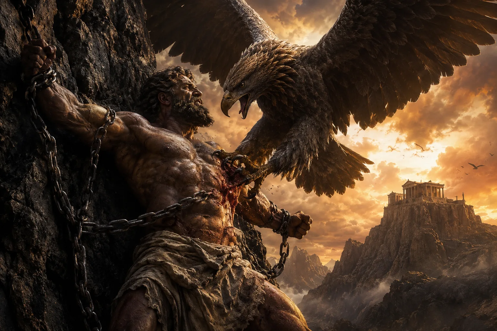

Yunan mitolojisinde bazı karakterler yalnızca yaşadıkları olaylarla değil, temsil ettikleri düşüncelerle de öne çıkar. Prometheus, bu isimlerin başında gelir. Günümüzde çoğu kişi onu Zeus'tan ateşi çalarak insanlara veren Titan olarak tanır. Ancak antik kaynaklar incelendiğinde Prometheus'un hikâyesinin bundan çok daha kapsamlı olduğu görülür. O, Titanlar Savaşı'nda Zeus'un yanında yer alan bir müttefik, tanrılar ile insanlar arasındaki ilk büyük anlaşmazlığın mimarı, Pandora'nın yaratılmasına neden olan olayların baş aktörü ve bazı geleneklerde insan uygarlığının gerçek kurucusu olarak kabul edilir.
Prometheus'un mitolojik önemi yalnızca ateşi çalmasından kaynaklanmaz. Ateş, aslında insanlığa kazandırdığı bilgi ve becerilerin simgesidir. Antik yazarlar ona mimarlık, gemicilik, matematik, yazı, tıp, hayvancılık ve metal işçiliği gibi uygarlığın temelini oluşturan pek çok sanatın öğreticisi rolünü de yükler. Bu nedenle Prometheus, Yunan mitolojisinde yalnızca bir Titan değil; aklın, öngörünün ve insanlığın ilerleme arzusunun sembolü hâline gelmiştir.
Bununla birlikte Prometheus hakkında anlatılan bütün hikâyeler tek bir kaynağa dayanmaz. Hesiodos, onu Zeus'un otoritesine karşı kurnazlık yapan bir figür olarak anlatırken, Aiskhylos'un Zincire Vurulmuş Prometheus adlı tragedyasında insanlık uğruna acı çeken bir kahramana dönüşür. Bu makalede Prometheus'un kökeni, Titanlar Savaşı'ndaki tutumu, Mekone'deki kurban hilesi, ateşin çalınması, Pandora'nın yaratılması, aldığı cezanın anlamı, Herakles tarafından kurtuluşu ve antik dünyadan günümüze nasıl değişen bir simgeye dönüştüğü ele alınacaktır.
Prometheus'un Kökeni: Titan Soyunun En Zeki Üyesi
Prometheus, Uranos ile Gaia'nın çocukları olan ilk Titan kuşağından değildir. O, Titanların ikinci nesline mensuptur. Babası, Titanlardan İapetos, annesi ise çoğu antik kaynağa göre Okeanos'un kızlarından biri olan Klymene ya da Asia'dır. Soyu bakımından Prometheus, Olimpos tanrılarından daha yaşlı olsa da Kronos gibi ilk Titan hükümdarlarıyla aynı kuşağa ait değildir. Bu ayrıntı, onun hem Titanlar hem de Olimpos tanrıları arasında farklı bir konumda bulunmasının nedenlerinden biridir.
Prometheus'un üç kardeşi vardır: Atlas, Epimetheus ve Menoitios. Antik yazarlar bu dört kardeşi yalnızca aynı ailenin üyeleri olarak değil, insan karakterinin farklı yönlerini temsil eden figürler olarak da ele alır. Atlas fiziksel dayanıklılığı ve sonsuz yüküyle, Menoitios ölçüsüz öfkesiyle, Epimetheus düşünmeden hareket eden yapısıyla öne çıkarken Prometheus ise zekâsı, öngörüsü ve plan yapma becerisiyle diğerlerinden ayrılır.
Prometheus'un adı da bu karakter özelliklerini yansıtır. Eski Yunanca Promētheus, genel kabul gören görüşe göre "önceden düşünen", "ileriyi gören" ya da "öngörü sahibi" anlamına gelir. Buna karşılık kardeşi Epimetheus "sonradan düşünen" anlamını taşır. Yunan mitolojisi bu iki kardeşi yalnızca biyolojik akraba olarak değil, doğru zamanda düşünmenin ve olaylardan sonra pişman olmanın sembolleri olarak karşı karşıya getirir.
Prometheus'un Titan soyundan gelmesi, onun Zeus'un doğal düşmanı olduğu anlamına da gelmez. Aksine antik kaynaklar, Titanlar arasında geleceği en doğru değerlendiren figürlerden biri olduğunu gösterir. Babası İapetos'un soyundan gelen birçok karakter Kronos'un yanında yer alırken Prometheus, yaklaşan değişimi erken fark eden ve buna göre hareket eden tek Titan olarak öne çıkar.
Prometheus Titanlar Savaşı'nda Neden Zeus'un Tarafını Seçti?
Prometheus'un hikâyesindeki en dikkat çekici ayrıntılardan biri, Titan soyundan gelmesine rağmen Titanlar Savaşı'nda Kronos'un yanında savaşmamış olmasıdır. İlk bakışta bu tercih bir ihanet gibi görünse de antik kaynaklar, Prometheus'un kararını kişisel çıkarlardan çok öngörüsüyle ilişkilendirir. Zaten isminin anlamı da "önceden düşünen" olduğu için bu seçim, karakterinin en belirgin özelliğini ortaya koyan ilk büyük olaydır.
Daha sonraki mitolojik gelenekler ve özellikle Apollodoros'un aktardığı bilgiler, onun Zeus'un başarıya ulaşacağını önceden gördüğünü ve bu nedenle Olimpos tanrılarının yanında yer aldığını gösterir. Prometheus'un bu tercihi yalnızca kazanan tarafı seçmekten ibaret değildir. Kronos'un kurduğu düzenin sürdürülebilir olmadığını, korku ve baskı üzerine inşa edilen bir iktidarın er ya da geç yıkılacağını anlayan ilk Titanlardan biri olduğu düşünülür.
Bu yönüyle Prometheus, kardeşi Atlas'ın tam karşısında durur. Atlas, Titan ordusunun en güçlü komutanlarından biri olarak Kronos'a sadık kalırken Prometheus değişen düzeni kabul eder ve Zeus'un müttefiki olur. Titanlar Savaşı'nın sonunda iki kardeşin tamamen farklı kaderler yaşaması da bu tercihlerin doğrudan sonucudur. Atlas göğü sonsuza kadar omuzlarında taşımaya mahkûm edilirken Prometheus, başlangıçta Zeus'un güvenini kazanan az sayıdaki Titan arasında yer alır.
Ancak bu ittifak uzun sürmez. Savaş sona erdikten sonra Zeus ile Prometheus'un insanlara bakışı arasındaki görüş ayrılığı giderek büyümeye başlar. Zeus yeni kurduğu düzenin mutlak otoritesini korumaya çalışırken, Prometheus insanların gelişmesini ve tanrılara tamamen bağımlı kalmamasını ister. Bu çatışmanın ilk büyük kıvılcımı Mekone'de düzenlenen kurban töreninde ortaya çıkar.
Mekone'deki Kurban Töreni: Prometheus Zeus'u Nasıl Aldattı?
Titanlar Savaşı'nın ardından Zeus'un egemenliği kabul edilmiş olsa da tanrılar ile insanlar arasındaki ilişkinin nasıl düzenleneceği henüz kesinleşmemişti. Antik Yunan geleneğine göre bu belirsizlik, Mekone'de yapılan büyük bir kurban töreni sırasında çözüme kavuştu. Bu anlatının en eski ve en ayrıntılı versiyonu Hesiodos'un Theogonia adlı eserinde yer alır.
Hesiodos'a göre Prometheus, kesilen büyük bir öküzü iki ayrı parçaya ayırır. İlk yığında hayvanın değerli eti ve yenilebilir organları bulunmasına rağmen bunların üzeri işkembeyle kapatılır. Diğer yığında ise kemikler yer alır; fakat Prometheus kemikleri parlak beyaz yağ tabakasıyla dikkat çekici biçimde örter. Dışarıdan bakıldığında ikinci yığın çok daha cazip görünmektedir.
Daha sonra Prometheus, Zeus'tan bu iki paydan birini seçmesini ister. Zeus, yağla kaplı olan gösterişli yığını seçer ve altında yalnızca kemiklerin bulunduğunu görünce büyük bir öfkeye kapılır. Böylece insanların kurban ettikleri hayvanların etini kendilerine ayırmaları, tanrılara ise kemik ve yağ sunmaları geleneğinin mitolojik açıklaması ortaya çıkar.
Ancak burada önemli bir ayrıntı vardır. Hesiodos'un anlatımı, Zeus'un gerçekten aldatılıp aldatılmadığı konusunda kesin bir cevap vermez. Bazı dizelerde Zeus'un hileyi fark etmeden seçim yaptığı izlenimi oluşurken, başka bölümlerde onun Prometheus'un planını başından beri bildiği ve yaklaşan cezalandırma sürecini başlatmak için bilinçli olarak bu seçimi yaptığı ima edilir. Başka bir ifadeyle mesele, Zeus'un kandırılmasından çok Prometheus'un tanrısal otoriteye açıkça meydan okumasıdır.
Zeus'un vereceği karşılık ise doğrudan Prometheus'u hedef almaz. Önce insanları cezalandırmaya karar verir: Onların sahip olduğu en büyük avantajlardan birini, yani ateşi, erişilemez hâle getirir. Ancak Prometheus, insanların yeniden çaresiz bırakılmasını kabul etmeyecek ve ateşi geri çalacaktır.
Zeus İnsanlardan Ateşi Neden Esirgedi?
Mekone'deki kurban paylaşımı, Zeus ile Prometheus arasındaki anlaşmazlığın açık bir çatışmaya dönüşmesine neden oldu. Hesiodos'un aktardığına göre tanrıların kralı, ölümlülerin ateşe ulaşmasını engelledi ve onları yeniden ilkel bir yaşam sürmeye mahkûm etmeye çalıştı.
Antik Yunan düşüncesinde ateş, yalnızca ısınmayı sağlayan doğal bir unsur değildir. Ateş; yemek pişirmeyi, madenleri işlemeyi, çanak çömlek üretmeyi, alet yapmayı ve geceleri güvenli biçimde yaşamayı mümkün kılan uygarlığın temelidir. Ateşin olmadığı bir dünyada insanlar yabani hayvanlardan korunamaz, metalleri şekillendiremez ve gelişmiş bir toplum kuramaz. Bu nedenle Zeus'un ateşi geri alması, insanlardan yalnızca bir aracı değil, ilerleme imkânını da alması anlamına gelir.
Aiskhylos'un Zincire Vurulmuş Prometheus adlı tragedyasında ise ateşin anlamı daha da genişletilir. Burada Prometheus, insanlara yalnızca ateşi değil; sayı saymayı, yazıyı, mimariyi, gemiciliği, tıbbı, hayvanları evcilleştirmeyi ve maden işlemeyi de öğrettiğini söyler. Bu nedenle ateş, tek başına fiziksel bir nesne olmaktan çıkar; bilgiyi, tekniği ve uygarlığı temsil eden güçlü bir simgeye dönüşür.
Prometheus Ateşi Nasıl Çaldı?
Prometheus'un ateşi nasıl ele geçirdiği antik kaynaklarda tek bir biçimde anlatılmaz. Hesiodos, Prometheus'un ateşi içi oyulmuş rezene sapının (nartheks) içine gizleyerek tanrılardan kaçırdığını aktarır. Rezene bitkisinin kuru gövdesi, kor hâlindeki ateşi uzun süre söndürmeden taşıyabilecek yapıya sahip olduğundan bu ayrıntının günlük yaşamdan esinlenmiş olması muhtemeldir.
Daha sonraki antik yazarlar bu sahneyi farklı ayrıntılarla zenginleştirir. Bazı anlatılarda Prometheus'un ateşi doğrudan Hephaistos'un ocağından aldığı söylenirken, bazı geleneklerde Athena'nın ona istemeden yardım ettiği anlatılır. Ancak bu ayrıntılar bütün kaynaklarda ortak değildir.
Kaynaklar arasında değişmeyen esas nokta ise Prometheus'un bu eylemi bilinçli olarak gerçekleştirmesidir. O, Zeus'un koyduğu yasağı ihlal ettiğinin farkındadır ve bunun ağır bir cezası olacağını da bilir. Buna rağmen insanların yeniden karanlığa mahkûm edilmesini kabul etmez. Prometheus'u Yunan mitolojisinin en sıra dışı karakterlerinden biri yapan özellik de budur: Tanrıların düzenine karşı çıkan ilk figür değildir; fakat bunu kendi çıkarı için değil, ölümlülerin yararı için yapan ilk büyük mitolojik karakterlerden biridir.
Pandora'nın Yaratılması: Zeus İnsanlığı Nasıl Cezalandırdı?
Prometheus'un ateşi yeniden insanlara ulaştırması, Zeus'un koyduğu yasağı açıkça geçersiz hâle getirdi. Tanrıların kralı bu kez ateşi geri almaya çalışmak yerine, insanların ellerinden bırakamayacağı ve sonuçları kalıcı olacak yeni bir ceza hazırladı. Hesiodos'un hem Theogonia hem de İşler ve Günler adlı eserlerinde anlatılan bu cezanın merkezinde, tanrılar tarafından yaratılan ilk kadın olan Pandora bulunur.
Zeus'un emriyle Hephaistos, toprağı suyla karıştırarak insan biçiminde bir varlık yaratır. Athena ona dokuma sanatını öğretir ve giysiler verir; Aphrodite güzellik ve arzu uyandırma gücü kazandırır. Hermes ise kurnazlık ve aldatıcı sözleri ona yükler. Her tanrının bir armağan sunduğu bu kadın bu nedenle "bütün armağanlara sahip olan" anlamındaki Pandora adıyla anılır. Ancak Hesiodos'un anlatısında bu armağanların amacı insanlığı ödüllendirmek değil, dışarıdan çekici görünen fakat beraberinde ağır sonuçlar getiren bir tuzak hazırlamaktır.
Pandora'nın yaratılması, Prometheus'un ateşi çalmasına verilen doğrudan karşılıktır. Hermes onu Prometheus'un kardeşi Epimetheus'a götürür. Prometheus daha önce kardeşini Zeus'tan gelecek hiçbir armağanı kabul etmemesi konusunda uyarmıştır. Ancak "sonradan düşünen" anlamına gelen Epimetheus, Pandora'nın çekiciliği karşısında bu uyarıyı unutur ve onu kabul eder. Böylece Zeus'un planı, Prometheus'un bütün öngörüsüne rağmen onun kendi ailesi üzerinden gerçekleşir.
Pandora'nın Kutusunda Ne Vardı?
Günümüzde yaygın olarak "Pandora'nın kutusu" adıyla bilinen nesne, antik metinlerde aslında bir kutu değildir. Hesiodos'un kullandığı Yunanca sözcük pithos, büyük bir toprak küpü ya da depolama kabını ifade eder. Bu kap zamanla çevirilerde "kutu" şeklinde aktarılmış ve modern kültürde bu yanlış kullanım yerleşmiştir.
Hesiodos'un İşler ve Günler adlı eserine göre kap açıldığında hastalıklar, yorgunluk, acı, yaşlılık ve insanların yaşamını zorlaştıran sayısız kötülük dünyaya dağılır. Kabın içinde kalan tek şey Elpis olarak adlandırılır. Bu kelime çoğu zaman "umut" şeklinde çevrilse de Eski Yunancada yalnızca olumlu beklentiyi değil, genel anlamda geleceğe ilişkin beklentiyi de ifade edebilir. Elpis'in kapta kalmasının ne anlama geldiği antik çağdan günümüze kadar tartışılmıştır: Bir yoruma göre umut insanlara teselli olması için korunmuştur; başka bir yoruma göre ise umut da kabın içinde tutulduğu için insanlığın erişemediği bir iyilik hâline gelmiştir.
Pandora miti, Prometheus'un insanlara ateşi vermesiyle doğrudan bağlantılıdır. Zeus, ateşin sağladığı bilgi ve teknik üstünlüğü geri alamayınca insan yaşamını acı, hastalık ve çalışma zorunluluğuyla sınırlandırır. Böylece insanlık uygarlığın araçlarına kavuşmuş olsa da bu ilerlemenin bedelini ödemek zorunda kalır.
Zeus Prometheus'u Neden Zincire Vurdurdu?
Pandora'nın yaratılması, Zeus'un Prometheus'a duyduğu öfkeyi sona erdirmedi. Ateşin insanlara ulaştırılması, tanrıların kralının koyduğu yasağın açıkça çiğnenmesi anlamına geliyordu. Üstelik bu eylem, sıradan bir itaatsizlik değil; Zeus'un kurmaya çalıştığı ilahi otoriteye doğrudan meydan okumaydı.
Hesiodos'un Theogonia'sında Zeus'un vereceği ceza kesin ve kaçınılmazdır. Tanrıların kralı, Prometheus'un yakalanmasını emreder ve onu dünyanın en ulaşılmaz bölgelerinden birinde kayalara zincirletir. Bu görevi güç ve zor kullanmanın kişileşmiş hâlleri olan Kratos ile Bia yerine getirirken, zincirleri ve kelepçeleri ise demircilik tanrısı Hephaistos hazırlar. Özellikle Aiskhylos'un Zincire Vurulmuş Prometheus adlı tragedyasında bu sahne ayrıntılı biçimde işlenir. Hephaistos, Prometheus'a acıdığı için bu görevi isteksizce yerine getirirken Kratos, Zeus'un emirlerinin hiçbir tereddüt göstermeden uygulanması gerektiğini savunur.
Prometheus'un bağlandığı yer de antik kaynaklarda önem taşır. Çoğu gelenekte cezanın Kafkas Dağları'nda infaz edildiği belirtilir. Antik Yunanlıların dünyasında Kafkaslar, bilinen uygarlığın sınırında yer alan, ulaşılması son derece güç ve yabani bir bölge olarak düşünülüyordu. Bu nedenle Prometheus'un buraya zincirlenmesi yalnızca kaçmasını engellemek için değil, onu tanrılardan ve insanlardan tamamen uzaklaştırmak için seçilmiş sembolik bir cezadır.
Zeus'un amacı Prometheus'u öldürmek değildir. Titanlar gibi Prometheus da ölümsüzdür ve yaşamına son vermek mümkün değildir. Bu nedenle verilecek ceza, ölümden çok daha ağır olacak şekilde tasarlanır: Prometheus'un her gün aynı acıyı yaşayacağı ve bu acının hiçbir zaman sona ermeyeceği sonsuz bir işkence düzeni kurulur.
Prometheus'un Karaciğerini Yiyen Kartal Ne Anlama Gelir?
Prometheus kayalara zincirlendikten sonra Zeus, cezasını tamamlayacak son unsuru da devreye sokar. Zeus'un kartalı olarak tanımlanan dev bir yırtıcı kuş, her gün Prometheus'un yanına gelir ve onun karaciğerini parçalayarak yer. Gün sona erdiğinde ise ölümsüz Titan'ın bedeni kendini yeniden onarır. Ertesi gün kartal geri döner ve aynı işkence baştan başlar.
Antik Yunanlılar karaciğeri yalnızca biyolojik bir organ olarak görmüyordu. Pek çok antik kültürde olduğu gibi Yunan dünyasında da karaciğer, yaşam gücü ve içsel enerjinin merkezi ile ilişkilendiriliyordu. Bu nedenle kartalın her gün aynı organı hedef alması rastgele seçilmiş bir ayrıntı değildir. Zeus'un cezası, Prometheus'un yaşamını sona erdirmeden onu sürekli acı içinde bırakacak şekilde tasarlanmıştır.
Bu sonsuz döngü, Prometheus'un karakterini de diğer mitolojik figürlerden ayırır. O, çektiği ağır acılara rağmen Zeus'tan af dilemez ve insanlara yaptığı iyiliği inkâr etmez. Özellikle Aiskhylos'un tragedyasında Prometheus, uğradığı işkenceye rağmen kararından pişman olmadığını açıkça dile getirir. Bu tavır, onun sonraki yüzyıllarda yalnızca mitolojik bir Titan değil; baskıya karşı direnen, inandığı değerlerden vazgeçmeyen bir figür olarak görülmesinde önemli rol oynamıştır.
Herakles Prometheus'u Nasıl Kurtardı?
Prometheus'un ne kadar süre zincire vurulu kaldığı antik kaynaklarda kesin olarak belirtilmez. Ancak bütün gelenekler, bu cezanın uzun yıllar boyunca devam ettiği ve ancak Herakles'in maceraları sırasında sona erdiği konusunda birleşir.
Herakles'in Kafkas Dağları'na gelişi, On İki Görev arasında yer alan Hesperides'in altın elmalarını getirme görevi sırasında gerçekleşir. Kahraman, Atlas'a ulaşmak için çıktığı yolculukta kayalara zincirlenmiş Prometheus'u görür. Apollodoros'un Bibliotheke adlı eserinden aktarılan geleneğe göre Herakles, Prometheus'a işkence eden kartalı okuyla öldürür. Böylece yıllardır her gün tekrarlanan işkence ilk kez durur.
Ancak kartalın öldürülmesi tek başına Prometheus'un özgürlüğü anlamına gelmez. Titan hâlâ Zeus'un buyruğuyla zincire vurulmuştur. Bazı anlatılarda Herakles'in Zeus'tan izin aldığı, bazılarında ise Zeus'un zaten bu kurtuluşu önceden kabul ettiği ifade edilir. Ortak nokta ise Prometheus'un özgürlüğünün Zeus'un bilgisi dışında gerçekleşmediğidir.
Zeus Prometheus'u Neden Affetti?
Prometheus'un serbest bırakılmasının ardındaki en önemli neden, antik kaynaklarda sıkça geçen bir kehanetle ilişkilidir. Özellikle Aiskhylos'un Zincire Vurulmuş Prometheus adlı tragedyasında Titan, Zeus'un gelecekte tahtını kaybetmesine yol açabilecek bir sırrı bildiğini söyler. Ancak bu bilgiyi açıklamayı reddeder ve cezasına rağmen sessiz kalmayı tercih eder.
Söz konusu kehanet, deniz tanrıçası Thetis ile ilgilidir. Kehanete göre Thetis'in doğuracağı oğul, babasından daha güçlü olacaktır. Eğer Zeus Thetis'le birlikte olursa, tıpkı Uranos ve Kronos gibi kendi oğlunun tehdidiyle karşı karşıya kalacaktır. Prometheus sonunda bu kehaneti Zeus'a açıklar; bunun üzerine Zeus, Thetis'le evlenme düşüncesinden vazgeçer ve onu ölümlü kahraman Peleus ile evlendirir. Bu evlilikten ise daha sonra Troya Savaşı'nın en ünlü kahramanlarından biri olan Akhilleus doğacaktır.
Prometheus'un özgürlüğüne kavuşması bu uzlaşmanın ardından mümkün olur. Prometheus ile Zeus arasındaki çatışmanın uzlaşmayla sonuçlanması, Yunan mitolojisinde alışılmadık bir gelişmedir. Bu hikâye, taraflardan birinin tamamen yok edilmesiyle değil; bilgi, kehanet ve karşılıklı çıkarın ağır basmasıyla sona erer.
Deukalion Tufanı: Prometheus İnsan Soyunu Nasıl Kurtardı?
Prometheus'un insanlıkla ilişkisi ateşin çalınmasıyla sona ermez. Daha sonraki mitolojik geleneklerde onun adı, Zeus'un insan soyunu büyük bir tufanla yok etmeye karar verdiği anlatıda yeniden ortaya çıkar. Bu kez Prometheus insanlara bilgi kazandıran bir öğretici değil, yaklaşan felaketi önceden görerek kendi oğlunu uyaran bilge bir baba rolündedir.
Prometheus yaklaşan tufanı önceden öğrenir ve oğlu Deukalion'u uyarır. Deukalion, Prometheus ile çoğu kaynakta Okeanos kızı Pronoia'nın oğludur. Prometheus'un öğüdüyle sağlam bir sandık ya da büyük bir tekne hazırlayan Deukalion, karısı Pyrrha ile birlikte içine gerekli erzakları yerleştirir. Zeus'un gönderdiği yağmurlar yeryüzünü sular altında bırakır ve yalnızca Deukalion ile Pyrrha hayatta kalır.
Sular çekildiğinde çift, "büyük annenizin kemiklerini omuzlarınızın üzerinden geriye atın" biçiminde kapalı bir kehanet alır. Deukalion bu sözlerdeki "büyük anne"nin bütün varlıkların anası Gaia, onun "kemiklerinin" ise yeryüzündeki taşlar olduğunu anlar. Bunun üzerine Deukalion'un attığı taşlardan erkekler, Pyrrha'nın attığı taşlardan kadınlar meydana gelir. Böylece insan soyu yeniden yaratılmış olur.
Bu anlatıda Prometheus tufanı durdurmaz ve Zeus'la doğrudan mücadele etmez. Onun katkısı, felaketi önceden görmesi ve oğluna kurtuluş yolunu göstermesidir. Bu ayrıntı Prometheus'un adında taşıdığı "önceden düşünen" niteliğini bir kez daha ortaya çıkarır.
Prometheus İnsanları Çamurdan mı Yarattı?
Prometheus'un insanları çamurdan biçimlendirdiği düşüncesi bugün mitin en bilinen parçalarından biridir. Buna rağmen Yunan edebiyatının en eski kaynakları bu olayı açık biçimde anlatmaz. Hesiodos'un Theogonia ve İşler ve Günler adlı eserlerinde insanlar Prometheus'un yarattığı varlıklar olarak sunulmaz; Titan, önceden var olan insan soyunun çıkarlarını koruyan bir figürdür.
İnsanların Prometheus tarafından balçıktan şekillendirildiği anlatı, özellikle Helenistik ve Roma dönemlerinde belirginleşir. Latin yazarı Hyginus, Prometheus'un insanları topraktan yarattığını açıkça aktarır. Ovidius da Metamorfozlar eserinin başlangıcında İapetos'un oğlu Prometheus'un insanı göksel unsurlar taşıyan topraktan biçimlendirmiş olabileceğini söyler. Bazı sonraki anlatılarda Prometheus insan bedenini çamurdan biçimlendirirken Athena'nın bu şekillere yaşam soluğu verdiği belirtilir.
Bu nedenle Prometheus'u insanlığın yaratıcısı olarak tanımlarken kaynakların dönemini belirtmek gerekir. En eski anlatılarda o, insanı yoktan var eden bir tanrı değil; zaten var olan insan soyunu koruyan ve ona uygarlığın araçlarını sağlayan Titan'dır. Daha sonraki Yunan ve Roma eserlerinde ise bu koruyuculuk rolü yaratıcı kimliğe dönüşmüştür.
Prometheus ile Epimetheus Arasındaki Fark Nedir?
Yunan mitolojisinde Prometheus ile Epimetheus yalnızca iki kardeş değildir. Antik yazarlar bu ikiliyi, insanın karar verme biçimini temsil eden birbirini tamamlayan iki karakter olarak kurgulamıştır. İsimlerinin anlamı bile bu karşıtlığı açıkça ortaya koyar: Prometheus "önceden düşünen" anlamına gelirken Epimetheus "sonradan düşünen" anlamını taşır.
Prometheus'un en belirgin özelliği, olayların sonuçlarını gerçekleşmeden önce değerlendirebilmesidir. Titanlar Savaşı'nda Zeus'un yanında yer alması, Epimetheus'u Zeus'tan gelecek hediyeler konusunda uyarması ve Deukalion'u yaklaşan tufandan haberdar etmesi bu yönünün farklı örnekleridir.
Epimetheus ise bunun tam tersini temsil eder. Pandora'nın kabul edilmesi bu durumun en açık örneğidir. Prometheus'un bütün uyarılarına rağmen Zeus'tan gelen armağanı geri çevirmez ve kararının sonuçlarını ancak Pandora'nın beraberinde getirdiği felaketler ortaya çıktıktan sonra kavrar.
Bununla birlikte Epimetheus'u yalnızca "akılsız kardeş" olarak değerlendirmek doğru olmaz. Özellikle daha sonraki mitolojik yorumlarda onun hataları, insan doğasının kaçınılmaz zayıflıklarıyla ilişkilendirilmiştir. Prometheus ideal bilgeliği temsil ederken Epimetheus sıradan insanın deneyim yoluyla öğrenen yönünü simgeler.
Antik Kaynaklarda Prometheus Nasıl Anlatılır?
Prometheus hakkında günümüze ulaşan bilgiler tek bir eserden gelmez. Prometheus'tan ayrıntılı biçimde söz eden en eski yazar Hesiodos'tur. Theogonia ve İşler ve Günler adlı eserlerinde Prometheus, Zeus'un otoritesine meydan okuyan son derece zeki fakat kurnaz bir Titan olarak karşımıza çıkar. Mekone'deki kurban paylaşımı, ateşin çalınması ve Pandora'nın yaratılması gibi mitin temel unsurları ilk kez bu eserlerde sistemli biçimde anlatılır.
Prometheus'un kişiliği, MÖ 5. yüzyılda Aiskhylos'a atfedilen Zincire Vurulmuş Prometheus tragedyasında belirgin biçimde değişir. Burada Titan artık kurnaz bir düzen bozucu değil; insanlığın gelişmesi için acı çekmeyi göze alan bilge bir kahramandır. Ateşin yanı sıra yazıyı, matematiği, tıbbı, mimariyi ve daha birçok bilgiyi insanlara öğrettiğini söylemesi, onun uygarlığın kurucusu olarak görülmeye başlamasının en önemli nedenlerinden biridir.
Daha geç dönemde yazılan Apollodoros'un Bibliotheke adlı eseri ise farklı gelenekleri tek bir anlatıda toplamaya çalışır. Hyginus ve Ovidius gibi Roma dönemi yazarları ise Prometheus'un insanı çamurdan yaratması gibi geç gelenekleri öne çıkararak mite yeni boyutlar kazandırmıştır.
Prometheus Yunan Mitolojisinde Neyi Temsil Eder?
Prometheus, Yunan mitolojisinde belirli bir doğa olayını ya da kozmik gücü temsil eden sıradan bir Titan değildir. Onun karakteri, insan ile tanrı arasındaki ilişkinin sınırlarını sorgulayan en karmaşık figürlerden biri olarak gelişmiştir.
Prometheus'un ateşi çalması çoğu zaman fiziksel bir nesnenin ele geçirilmesi gibi anlatılır. Oysa özellikle Aiskhylos'un eserinde ateş çok daha geniş bir anlam taşır. İnsanlara kazandırdığı yazı, matematik, gemicilik, mimarlık, tıp, hayvanların evcilleştirilmesi ve metal işçiliği gibi bilgiler, ateşin uygarlığın başlangıcını temsil ettiğini gösterir. Ateş burada yalnızca ısı sağlayan bir unsur değil, insanı doğanın pasif bir parçası olmaktan çıkaran bilgi ve üretim gücünün simgesidir.
Bu nedenle Prometheus ile Zeus arasındaki çatışma da yalnızca iki güçlü varlığın mücadelesi değildir. Bir tarafta ilahi düzeni korumaya çalışan Zeus, diğer tarafta ise insanların gelişmesini isteyen Prometheus bulunur. Hesiodos, Zeus'un otoritesini meşru görürken Prometheus'un kurnazlığını eleştirel bir dille aktarır. Aiskhylos ise aynı olayı bambaşka bir bakış açısıyla ele alır ve Prometheus'u insanlık uğruna acı çeken bilge bir kahraman olarak öne çıkarır.
Prometheus'un temsil ettiği bir diğer düşünce ise öngörüdür. Titanlar Savaşı'nda Zeus'un yanında yer alması, Epimetheus'u Pandora konusunda uyarması ve Deukalion'u yaklaşan tufandan haberdar etmesi, bu özelliğin farklı anlatılardaki yansımalarıdır. Bilgisi onu çoğu zaman haklı çıkarır; ancak doğruyu bilmek, yaşanacak acıları engellemeye yetmez. Bu yönüyle Prometheus, bilginin her zaman mutluluk getirmeyeceğini gösteren trajik bir figüre dönüşür.
Prometheus'un etkisi yalnızca Antik Yunan'la sınırlı kalmamıştır. Özellikle Aydınlanma Çağı'ndan itibaren birçok düşünür ve sanatçı onu, otoriteye karşı aklı savunan insanın simgesi olarak yorumlamıştır. Bu nedenle Prometheus, yaklaşık üç bin yıllık geçmişine rağmen yalnızca mitolojik bir karakter olarak değil; bilgi, direnç ve ilerleme fikrinin evrensel sembollerinden biri olarak yaşamaya devam etmektedir.
Prometheus Sanat ve Edebiyatta Nasıl Bir İz Bıraktı?
Prometheus miti, Antik Yunan'dan günümüze kadar sanatın hemen her alanında yeniden ele alınan anlatılardan biri olmuştur. Antik Yunan'da Prometheus en güçlü edebî ifadesini Aiskhylos'a atfedilen Zincire Vurulmuş Prometheus tragedyasında bulur. Eser, ateşin çalınmasını değil; Prometheus'un cezasını ve Zeus'un otoritesine rağmen düşüncelerinden vazgeçmeyişini merkeze alır.
Rönesans ve Barok dönemlerinde Rubens, Salvator Rosa, Jacob Jordaens ve Gustave Moreau gibi sanatçılar Prometheus'un zincire vurulması ve kartal tarafından işkence görmesi sahnesini resimlerine konu etmiştir. Bu eserlerde dikkat çeken ortak nokta, Prometheus'un fiziksel acısından çok ruhsal direncinin ön plana çıkarılmasıdır.
19. yüzyılda ise Prometheus, romantik edebiyatın en güçlü simgelerinden biri hâline gelir. Percy Bysshe Shelley'nin Prometheus Unbound adlı şiirsel dramı, Aiskhylos'un tragedyasından ilham alır; ancak hikâyeyi farklı bir sonla yeniden kurar. Shelley'nin Prometheus'u, baskıcı otoriteye boyun eğmeyen ve sonunda özgürlüğe ulaşan bir kahramandır. Johann Wolfgang von Goethe de Prometheus adlı ünlü şiirinde Titan'ı insanın yaratıcı gücünü ve bağımsızlığını temsil eden bir figür olarak işler.
Günümüzde Prometheus miti sinema, roman, çizgi roman ve video oyunlarında yaşamayı sürdürmektedir. Çağdaş eserlerde karşımıza çıkan Prometheus figürü, çoğu zaman yalnızca ateşi çalan Titan değil; bilgiyi paylaşmanın bedelini ödeyen, otoriteye karşı çıkan ve insanlığın ilerlemesi için fedakârlık yapan evrensel bir karakter olarak karşımıza çıkar.
Prometheus Hakkında Sık Yapılan Yanlışlar
Prometheus bütün antik kaynaklarda insanlığın yaratıcısıdır.
Yanlıştır. Hesiodos'un en eski anlatılarında Prometheus insanları çamurdan yaratan bir Titan değildir. İnsan soyu zaten vardır; Prometheus onların tanrılar karşısındaki temsilcisi gibi davranır. İnsan bedenini topraktan biçimlendirdiği anlatı daha çok Helenistik ve Roma dönemlerinde belirginleşmiştir.
Prometheus ateşi doğrudan Güneş'ten çaldı.
Yanlıştır. Hesiodos ateşin içi kuru rezene sapı içinde taşındığını belirtir; ancak ateşin tam olarak nereden alındığını ayrıntılı biçimde açıklamaz. Antik gelenekte değişmeyen unsur, Zeus'un insanlardan sakladığı ateşin Prometheus tarafından gizlice geri getirilmesidir.
"Pandora'nın kutusu" mitin antik biçimini tam olarak yansıtır.
Yanlıştır. Hesiodos'un kullandığı pithos sözcüğü küçük bir kutuyu değil, büyük bir toprak küpü ifade eder. "Kutu" ifadesi sonraki çevirilerde yerleşmiştir. Ayrıca kapta kalan Elpis sözcüğünü yalnızca olumlu anlamda "umut" olarak çevirmek de metindeki belirsizliği ortadan kaldırır.
Prometheus'un kurtarılması Zeus'a karşı gizli bir başkaldırıdır.
Yanlıştır. Antik anlatılarda Prometheus'un kurtuluşu, Zeus'un bilgisi ya da onayıyla gerçekleşen daha geniş bir uzlaşmanın parçasıdır. Herakles, Zeus'a rağmen değil Zeus'un bilgisiyle hareket eder.
Prometheus ile Lucifer aynı mitolojik figürün farklı versiyonlarıdır.
Yanlıştır. Prometheus Antik Yunan mitolojisine ait bir Titan'dır. Lucifer kavramı ise Latin dilinde sabah yıldızı anlamından başlayarak Hristiyan teolojisinde farklı bir anlam geliştirmiştir. İki figür arasında modern edebiyatta sembolik paralellikler kurulmuş olsa da kökenleri ve anlatı işlevleri tamamen farklıdır.
Sık Sorulan Sorular
Prometheus tanrı mı Titan mı?
Prometheus, Olimpos tanrılarından biri değil, Titan soyuna mensup bir ilahi varlıktır. Babası İapetos, annesi ise çoğu antik kaynağa göre Okeanos kızı Klymene ya da Asia'dır. Titan olmasına rağmen Titanlar Savaşı'nda Kronos'un değil Zeus'un yanında yer almış ve savaş sonrasında Olimpos düzeni içinde yaşamaya devam etmiştir.
Prometheus neden ateşi çaldı?
Zeus, Mekone'deki kurban paylaşımından sonra insanlardan ateşi esirgeyerek onların gelişmesini engellemek istemiştir. Prometheus ise insanların yaşamlarını sürdürebilmeleri, üretim yapabilmeleri ve uygarlık kurabilmeleri için ateşi Olimpos'tan gizlice geri getirmiştir.
Prometheus'un cezası neydi?
Zeus'un emriyle Prometheus, Kafkas Dağları'ndaki kayalara zincirlenmiştir. Zeus'un gönderdiği dev bir kartal her gün onun karaciğerini yemiş, Titan ölümsüz olduğu için organı gece yeniden oluşmuş ve işkence sürekli tekrar etmiştir. Bu sonsuz döngü, Herakles'in kartalı öldürmesine kadar devam etmiştir.
Prometheus'u kim kurtardı?
Prometheus, Herakles tarafından kurtarılmıştır. On İki Görev kapsamında Kafkas Dağları'na ulaşan Herakles, Prometheus'un karaciğerini yiyen kartalı okuyla öldürmüş ve Zeus'un onayıyla Titan'ın zincirlerinden kurtulmasını sağlamıştır.
Pandora ile Prometheus'un ilişkisi nedir?
Pandora doğrudan Prometheus'un eşi ya da akrabası değildir. Zeus tarafından, Prometheus'un ateşi çalmasına karşılık insanlığa gönderilen ilk kadın olarak yaratılmıştır. Prometheus kardeşi Epimetheus'u Pandora'yı kabul etmemesi konusunda uyarmış; ancak Epimetheus bu uyarıyı dinlememiştir.
Prometheus gerçekten insanları yarattı mı?
Bu sorunun cevabı kullanılan kaynağa göre değişir. Hesiodos gibi en eski Yunan yazarları Prometheus'u insanlığın yaratıcısı olarak göstermez. İnsanları çamurdan şekillendirdiği anlatısı daha çok Helenistik ve Roma döneminde Hyginus ile Ovidius gibi yazarlarda belirginleşmiştir.
Prometheus'un karaciğeri neden yeniliyordu?
Prometheus ölümsüz olduğu için vücudu her gece kendini yeniliyordu. Böylece Zeus'un gönderdiği kartal ertesi gün yeniden gelip aynı organı parçalayabiliyordu. Cezanın amacı Prometheus'u öldürmek değil, onu sonsuza kadar aynı acıyı yaşamaya mahkûm etmekti.
Prometheus'un adı ne anlama gelir?
Prometheus adı, Eski Yunancada "önceden düşünen", "öngören" veya "ileriyi hesaplayan" anlamına gelir. Kardeşi Epimetheus'un adı ise "sonradan düşünen" anlamındadır. İki kardeşin isimleri, mit boyunca sergiledikleri karakter özelliklerini yansıtır.
Prometheus ile Zeus neden düşman oldu?
İkili arasındaki çatışma Mekone'deki kurban paylaşımıyla başlar. Prometheus'un Zeus'u aldatması üzerine insanlar ateşten mahrum bırakılır. Prometheus'un ateşi yeniden çalması ise Zeus'un onu zincire vurmasına ve Pandora'yı insanlığa göndermesine neden olur.
Prometheus hangi antik kaynaklarda anlatılır?
Prometheus hakkında en önemli bilgiler Hesiodos'un Theogonia ve İşler ve Günler adlı eserlerinden gelir. Aiskhylos'a atfedilen Zincire Vurulmuş Prometheus tragedyası onun karakterini ayrıntılı biçimde işler. Ayrıca Apollodoros'un Bibliotheke'si, Hyginus'un Fabulae'si ve Ovidius'un Metamorfozları da temel antik kaynaklar arasındadır.
Kaynakça
- Apollodoros. Bibliotheke (Kütüphane).
- Aiskhylos. Zincire Vurulmuş Prometheus (Prometheus Bound).
- Burkert, Walter. Greek Religion. Harvard University Press.
- Grimal, Pierre. The Dictionary of Classical Mythology. Wiley-Blackwell.
- Hard, Robin. The Routledge Handbook of Greek Mythology. Routledge.
- Hesiodos. İşler ve Günler (Works and Days).
- Hesiodos. Theogonia.
- Hyginus. Fabulae.
- Kerenyi, Karl. The Gods of the Greeks. Thames & Hudson.
- Morford, Mark P. O., & Lenardon, Robert J. Classical Mythology. Oxford University Press.
- Ovidius. Metamorfozlar (Metamorphoses).
- Pausanias. Yunanistan'ın Tasviri (Description of Greece).
- West, M. L. Hesiod: Theogony and Works and Days. Oxford University Press.